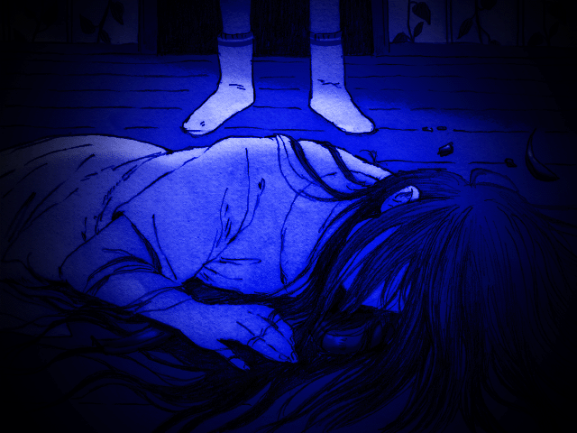

MARI
MARI é um dos principais personagens coadjuvantes em OMORI.
Ela é a irmã mais velha de OMORI no Mundo Imaginário, e era a irmã mais velha de SUNNY no MUNDO REAL.
PERFIL
APARÊNCIA
Uma garota com cabelo comprido e liso e franja. No Mundo Imaginário, ela tem cabelos escuros e olhos estilizados de roxo. Ela usa o que parece uma variação de um seifuku japonês.
No MUNDO REAL, MARI tinha cabelo preto, olhos pretos e usava uma jaqueta ou suéter roxo sobre um vestido branco. Ela usava sapatos roxos. Sua aparência também influenciou a aparência de sua contraparte HEADSPACE.
Como um espírito, MARI parece um pouco mais velha do que sua contraparte no Mundo Imaginário. Semelhante a OMORI, ela é completamente preta e branca, e seus olhos são pretos com pupilas brancas. Ela também usa um vestido longo e branco.
PERSONALIDADE
Ela é frequentemente mencionada como sendo gentil e gentil, e desempenha um papel de irmã no grupo de amigos com SUNNY, HERO, KEL, AUBREY e BASIL. Sua primeira aparição mostra que ela tem um lado travesso, zombando dos maneirismos de KEL e AUBREY e depois provocando HERO. Essas características são compartilhadas com sua contraparte no Mundo Imaginário.
Mais tarde no jogo, também é revelado que ela pregaria peças especialmente no HERO, como colocar insetos em sua carteira escolar. Também é mostrado que ela era uma perfeccionista, passando horas praticando a mesma peça para piano repetidamente.
Mesmo depois de sua morte, sua forma espiritual demonstra perdoar SUNNY, apesar do que ele fez a ela. Ela também tenta ajudar SUNNY a se perdoar e o lembra de se lembrar do que é importante.
Apesar de saber que seu irmão a matou acidentalmente no passado, MARI deseja que SUNNY siga em frente e viva sua vida sem nenhum arrependimento.
HISTÓRIA
COMO ELES SE CONHECERAM?

MARI nasceu em 1º de março, filho de mãe e pai não identificados, cerca de 19 anos antes do jogo principal. Três anos depois, seus pais tiveram seu irmão mais novo, SUNNY. Os dois cresceram na cidade ao lado da família de KEL.
Ela costumava jogar softball antes de sofrer uma lesão permanente no joelho. Ela era amiga de HERO e mais tarde tornou-se amiga de KEL, AUBREY e BASIL. O grupo costumava passar algum tempo junto, com um relacionamento romântico se formando entre ela e o HERO.
Certa vez, em uma viagem ao parque, SUNNY quase se afogou, mas foi salvo por MARI. Por causa desse incidente, o grupo parou de ir ao parque da cidade.
Antes dos eventos do jogo, MARI passava muito tempo praticando piano e tendo aulas preparatórias para a faculdade. Por causa disso, ela passaria menos tempo com seu irmão mais novo, SUNNY. Na tentativa de passar mais tempo com sua irmã, SUNNY pegou seu violino novamente e os dois praticavam juntos muitas vezes para um recital que se aproximava.
No dia do recital, MARI e SUNNY tiveram uma discussão que resultou nele empurrando-a sem querer escada abaixo, matando-a. Em seu choque, SUNNY a trouxe para a cama. SUNNY se fecha em si mesmo, dando início ao ESPAÇO BRANCO.
BASIL, que estava passando por lá, apresentou um plano para enquadrar sua morte como suicídio. Juntos, eles arrastaram seu corpo para o quintal. BASIL utilizou uma corda de pular para criar um laço para pendurar o corpo de MARI, encenando com sucesso o suicídio dela.
Recuando para dentro de casa, os dois olharam para seu cadáver para ver um de seus olhos olhando para eles, traumatizando as crianças e assombrando-as na forma de ALGUMA COISA.
Embora SUNNY e BASIL soubessem a verdade, todos os outros tinham a impressão de que MARI havia cometido suicídio.
Ela foi enterrada no CEMITÉRIO da Cidade, com sua lápide dizendo "NOSSA MAIS QUERIDA MARI; O SOL BRILHOU MAIS BRILHANTE QUANDO ELA ESTAVA AQUI."